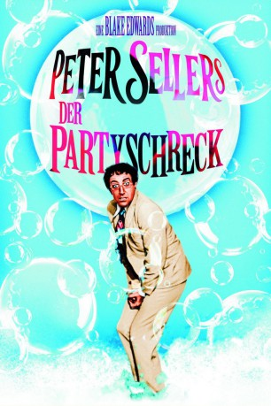

gesehen am 28.12.2016
gesehen am 28.12.2016Alternativ: The Party gesehen am 28.12.2016
 
 IMDB-Wertung: 7.6 / 10
IMDB-Wertung: 7.6 / 10  Metascore:
Metascore: 
Der indische Filmstatist Hrundi V. Bakshi zieht Katastrophen magisch an. Während Dreharbeiten zerstört er die Filmkulisse und wird gefeuert. Dann landet der tollpatschige Inder auch noch versehentlich auf der Party eines Hollywood-Produzenten.
Jahr: 1968
Dauer: 99 Minuten
FSK: 6
Land: USA Studio: United ArtistsTonspuren: DTS - ,
Untertitel: Deutsch,
Auflösung: 1080p (1920×820) Größe: 6400 MB
Genre: Komödie
Regisseur: Blake Edwards
Drehbuch: Blake Edwards, Tom Waldman, Frank Waldman, Blake Edwards
Soundtrack: Henry Mancini
Darsteller:
 Peter Sellers als Hrundi V. Bakshi
Peter Sellers als Hrundi V. Bakshi Steve Franken als Levinson
Steve Franken als Levinson Gavin MacLeod als C. S. Divot
Gavin MacLeod als C. S. Divot Timothy Scott als Gore Pontoon
Timothy Scott als Gore Pontoon Helen Kleeb als Secretary
Helen Kleeb als SecretaryDatei: X:\1968\Partyschreck, Der (1968, FSK6, 1920x820).mkv seit 02.02.2015
Festplatte: HD 1900-1970
 Es gibt insgesamt 25 Filme in der Gruppe '1968'
Es gibt insgesamt 25 Filme in der Gruppe '1968'